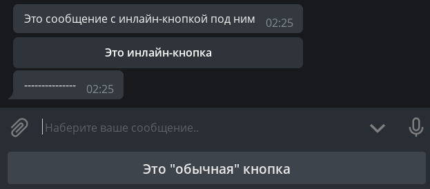
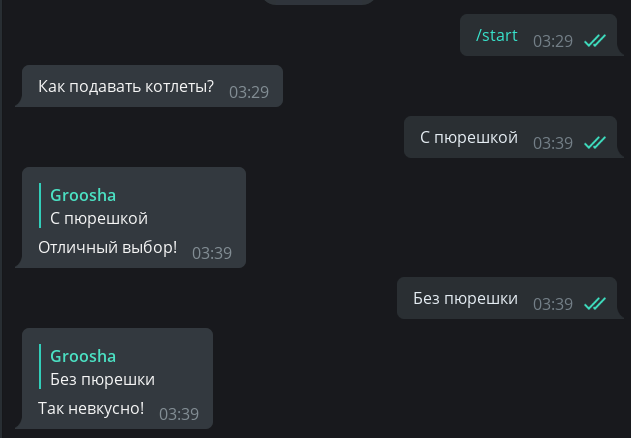
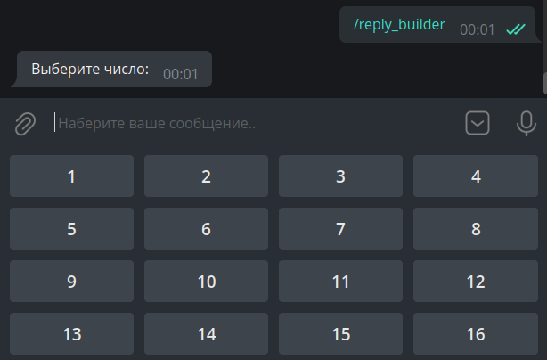
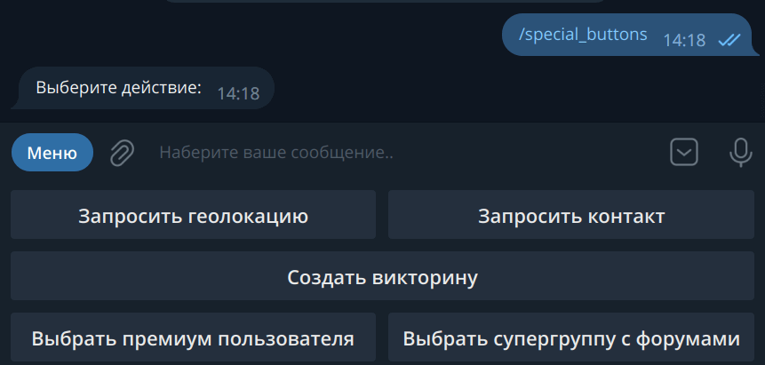
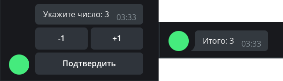
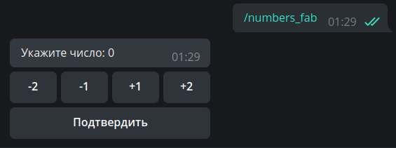

Кнопки¶
Используемая версия aiogram: 3.7.0
В этой главе мы познакомимся с такой замечательной фичей Telegram-ботов как кнопки. Прежде всего, чтобы избежать путаницы, определимся с названиями. То, что цепляется к низу экрана вашего устройства, будем называть обычными кнопками, а то, что цепляется непосредственно к сообщениям, назовём инлайн-кнопками. Ещё раз картинкой:

Обычные кнопки¶
Кнопки как шаблоны¶
Этот вид кнопок появился вместе с Bot API в далёком 2015 году и представляет собой не что иное, как шаблоны сообщений (за исключением нескольких особых случаев, но о них позже). Принцип простой: что написано на кнопке, то и будет отправлено в текущий чат. Соответственно, чтобы обработать нажатие такой кнопки, бот должен распознавать входящие текстовые сообщения.
Напишем хэндлер, который будет при нажатии на команду /start отправлять сообщение с двумя кнопками:
@dp.message(Command("start"))
async def cmd_start(message: types.Message):
kb = [
[types.KeyboardButton(text="С пюрешкой")],
[types.KeyboardButton(text="Без пюрешки")]
]
keyboard = types.ReplyKeyboardMarkup(keyboard=kb)
await message.answer("Как подавать котлеты?", reply_markup=keyboard)
Несмотря на то, что Telegram Bot API допускает указывать
просто строки вместо объектов KeyboardButton, при попытке использовать строку aiogram 3.x выкинет ошибку
валидации и это не баг, а фича.
Живите теперь с этим 🤷♂️
Что ж, запустим бота и обалдеем от громадных кнопок:

Как-то некрасиво. Во-первых, хочется сделать кнопки поменьше, а во-вторых, расположить их горизонтально.
Почему вообще они такие большие? Дело в том, что по умолчанию «кнопочная» клавиатура должна занимать на смартфонах столько
же места, сколько и обычная буквенная. Для уменьшения кнопок к объекту клавиатуры надо указать дополнительный
параметр resize_keyboard=True.
Но как заменить вертикальные кнопки на горизонтальные? С точки зрения Bot API, клавиатура — это
массив массивов кнопок, а если говорить проще, массив рядов.
Перепишем наш код, чтобы было красиво, а для
пущей важности добавим параметр input_field_placeholder, который заменит текст в пустой строке ввода,
когда активна обычная клавиатура:
@dp.message(Command("start"))
async def cmd_start(message: types.Message):
kb = [
[
types.KeyboardButton(text="С пюрешкой"),
types.KeyboardButton(text="Без пюрешки")
],
]
keyboard = types.ReplyKeyboardMarkup(
keyboard=kb,
resize_keyboard=True,
input_field_placeholder="Выберите способ подачи"
)
await message.answer("Как подавать котлеты?", reply_markup=keyboard)
Смотрим — действительно красиво:

Осталось научить бота реагировать на нажатие таких кнопок. Как уже было сказано выше, необходимо делать проверку на полное совпадение текста. Сделаем это при помощи магического фильтра F, подробнее о котором поговорим в другой главе:
# новый импорт!
from aiogram import F
@dp.message(F.text.lower() == "с пюрешкой")
async def with_puree(message: types.Message):
await message.reply("Отличный выбор!")
@dp.message(F.text.lower() == "без пюрешки")
async def without_puree(message: types.Message):
await message.reply("Так невкусно!")

Чтобы удалить кнопки, необходимо отправить новое сообщение со специальной «удаляющей» клавиатурой типа
ReplyKeyboardRemove. Например: await message.reply("Отличный выбор!", reply_markup=types.ReplyKeyboardRemove())
Keyboard Builder¶
Для более динамической генерации кнопок можно воспользоваться сборщиком клавиатур. Нам пригодятся следующие методы:
add(<KeyboardButton>)— добавляет кнопку в память сборщика;adjust(int1, int2, int3...)— делает строки поint1, int2, int3...кнопок;as_markup()— возвращает готовый объект клавиатуры;button(<params>)— добавляет кнопку с заданными параметрами, тип кнопки (Reply или Inline) определяется автоматически.
Создадим пронумерованную клавиатуру размером 4×4:
# новый импорт!
from aiogram.utils.keyboard import ReplyKeyboardBuilder
@dp.message(Command("reply_builder"))
async def reply_builder(message: types.Message):
builder = ReplyKeyboardBuilder()
for i in range(1, 17):
builder.add(types.KeyboardButton(text=str(i)))
builder.adjust(4)
await message.answer(
"Выберите число:",
reply_markup=builder.as_markup(resize_keyboard=True),
)

У объекта обычной клавиатуры есть ещё две полезных опции:
one_time_keyboard для автоматического скрытия кнопок после нажатия и selective для показа клавиатуры
лишь некоторым участникам группы. Их использование остаётся для самостоятельного изучения.
Специальные обычные кнопки¶
На момент написания этой главы в Telegram существует шесть специальных видов обычных кнопок, не являющихся обычными шаблонами сообщений. Они предназначены для:
- отправки текущей геолокации;
- отправки своего контакта с номером телефона;
- создания опроса/викторины;
- выбора и отправки боту данных пользователя с нужными критериями;
- выбора и отправки боту данных (супер)группы или канала с нужными критериями;
- запуска веб-приложения (WebApp).
Поговорим про них подробнее.
Отправка текущей геолокации. Здесь всё просто: где пользователь находится, те координаты и отправляет. Это будет статическое гео, а не Live Location, который обновляется автоматически. Разумеется, хитрые юзеры могут подменить своё местонахождение, иногда даже на уровне всей системы (Android).
Отправка своего контакта с номером телефона. При нажатии на кнопку (с предварительным подтверждением)
пользователь отправляет свой контакт с номером телефона боту. Те же хитрые юзеры могут проигнорировать кнопку
и отправить любой контакт, но в этом случае на них можно найти управу: достаточно проверить в хэндлере или
в фильтре равенство message.contact.user_id == message.from_user.id.
Создание опроса/викторины. По нажатию на кнопку пользователю предлагается создать опрос или викторину, которые
потом отправятся в текущий чат. Необходимо передать
объект KeyboardButtonPollType,
необязательный аргумент type служит для уточнения типа опроса (опрос или викторина).
Выбор и отправка боту данных пользователя с нужными критериями. Показывает окно выбора пользователя из списка чатов юзера, нажавшего на кнопку. Необходимо передать объект KeyboardButtonRequestUser, в котором надо указать сгенерированный любым способом айди запроса и критерии, например, "бот", "есть подписка Telegram Premium" и т.д. После выбора юзера бот получит сервисное сообщение с типом UserShared.
Выбор и отправка боту чата с нужными критериями. Показывает окно выбора пользователя из списка чатов юзера, нажавшего на кнопку. Необходимо передать объект KeyboardButtonRequestChat, в котором надо указать сгенерированный любым способом айди запроса и критерии, например, "группа или канал", "юзер — создатель чата" и т.д. После выбора юзера бот получит сервисное сообщение с типом ChatShared.
Запуск веб-приложения (WebApp). При нажатии на кнопку открывает WebApp. Необходимо передать объект WebAppInfo. В этой книге веб-аппы пока рассматриваться не будут.
Впрочем, проще один раз увидеть код:
@dp.message(Command("special_buttons"))
async def cmd_special_buttons(message: types.Message):
builder = ReplyKeyboardBuilder()
# метод row позволяет явным образом сформировать ряд
# из одной или нескольких кнопок. Например, первый ряд
# будет состоять из двух кнопок...
builder.row(
types.KeyboardButton(text="Запросить геолокацию", request_location=True),
types.KeyboardButton(text="Запросить контакт", request_contact=True)
)
# ... второй из одной ...
builder.row(types.KeyboardButton(
text="Создать викторину",
request_poll=types.KeyboardButtonPollType(type="quiz"))
)
# ... а третий снова из двух
builder.row(
types.KeyboardButton(
text="Выбрать премиум пользователя",
request_user=types.KeyboardButtonRequestUser(
request_id=1,
user_is_premium=True
)
),
types.KeyboardButton(
text="Выбрать супергруппу с форумами",
request_chat=types.KeyboardButtonRequestChat(
request_id=2,
chat_is_channel=False,
chat_is_forum=True
)
)
)
# WebApp-ов пока нет, сорри :(
await message.answer(
"Выберите действие:",
reply_markup=builder.as_markup(resize_keyboard=True),
)

Напоследок, две заготовки хэндлеров на приём нажатий от нижних двух кнопок:
# новый импорт
from aiogram import F
@dp.message(F.user_shared)
async def on_user_shared(message: types.Message):
print(
f"Request {message.user_shared.request_id}. "
f"User ID: {message.user_shared.user_id}"
)
@dp.message(F.chat_shared)
async def on_user_shared(message: types.Message):
print(
f"Request {message.chat_shared.request_id}. "
f"User ID: {message.chat_shared.chat_id}"
)
Инлайн-кнопки¶
URL-кнопки¶
В отличие от обычных кнопок, инлайновые цепляются не к низу экрана, а к сообщению, с которым были отправлены. В этой главе мы рассмотрим два типа таких кнопок: URL и Callback. Ещё один — Switch — будет рассмотрен в главе про инлайн-режим.
Login- и Pay-кнопки в книге рассматриваться не будут вообще. Если у кого-то есть желание помочь хотя бы с рабочим кодом для авторизации или оплаты, пожалуйста, создайте Pull Request на GitHub. Спасибо!
Самые простые инлайн-кнопки относятся к типу URL, т.е. «ссылка». Поддерживаются только протоколы HTTP(S) и tg://
# новый импорт
from aiogram.utils.keyboard import InlineKeyboardBuilder
@dp.message(Command("inline_url"))
async def cmd_inline_url(message: types.Message, bot: Bot):
builder = InlineKeyboardBuilder()
builder.row(types.InlineKeyboardButton(
text="GitHub", url="https://github.com")
)
builder.row(types.InlineKeyboardButton(
text="Оф. канал Telegram",
url="tg://resolve?domain=telegram")
)
# Чтобы иметь возможность показать ID-кнопку,
# У юзера должен быть False флаг has_private_forwards
user_id = 1234567890
chat_info = await bot.get_chat(user_id)
if not chat_info.has_private_forwards:
builder.row(types.InlineKeyboardButton(
text="Какой-то пользователь",
url=f"tg://user?id={user_id}")
)
await message.answer(
'Выберите ссылку',
reply_markup=builder.as_markup(),
)
Отдельно остановимся на среднем блоке кода. Дело в том, что в марте 2019 года разработчики Telegram
добавили возможность отключать переход
к профилю пользователя у пересланного сообщения. При попытке создать URL-кнопку с ID юзера, у которого отключен
переход по форварду, бот получит ошибку Bad Request: BUTTON_USER_PRIVACY_RESTRICTED. Соответственно, прежде чем
показывать такую кнопку, необходимо выяснить состояние упомянутой настройки. Для этого можно вызвать метод
getChat и в ответе проверить состояние поля has_private_forwards.
Если оно равно True, значит, попытка добавить URL-ID кнопку приведёт к ошибке.
Колбэки¶
С URL-кнопками больше обсуждать, по сути, нечего, поэтому перейдём к гвоздю сегодняшней программы — Callback-кнопкам. Это очень мощная штука, которую вы можете встретить практически везде. Кнопки-реакции у постов (лайки), меню у @BotFather и т.д. Суть в чём: у колбэк-кнопок есть специальное значение (data), по которому ваше приложение опознаёт, что нажато и что надо сделать. И выбор правильного data очень важен! Стоит также отметить, что, в отличие от обычных кнопок, нажатие на колбэк-кнопку позволяет сделать практически что угодно, от заказа пиццы до запуска вычислений на кластере суперкомпьютеров.
Напишем хэндлер, который по команде /random будет отправлять сообщение с колбэк-кнопкой:
@dp.message(Command("random"))
async def cmd_random(message: types.Message):
builder = InlineKeyboardBuilder()
builder.add(types.InlineKeyboardButton(
text="Нажми меня",
callback_data="random_value")
)
await message.answer(
"Нажмите на кнопку, чтобы бот отправил число от 1 до 10",
reply_markup=builder.as_markup()
)
Но как же обработать нажатие? Если раньше мы использовали хэндлер на message для обработки входящих сообщений, то теперь
будем использовать хэндлер на callback_query для обработки колбэков. Ориентироваться будем на «значение» кнопки, т.е. на
её data:
@dp.callback_query(F.data == "random_value")
async def send_random_value(callback: types.CallbackQuery):
await callback.message.answer(str(randint(1, 10)))

Ой, а что это за часики? Оказывается, сервер Telegram ждёт от нас подтверждения о доставке колбэка, иначе в течение 30
секунд будет показывать специальную иконку. Чтобы скрыть часики, нужно вызвать метод answer() у колбэка (или использовать
метод API answer_callback_query()). В общем случае, в метод answer() можно ничего не передавать, но можно вызвать
специальное окошко (всплывающее сверху или поверх экрана):
@dp.callback_query(F.data == "random_value")
async def send_random_value(callback: types.CallbackQuery):
await callback.message.answer(str(randint(1, 10)))
await callback.answer(
text="Спасибо, что воспользовались ботом!",
show_alert=True
)
# или просто await callback.answer()

У читателя может возникнуть вопрос: в какой момент обработки отвечать на колбэк методом answer()? В общем случае, главное — просто не забыть сообщить Telegram о получении колбэк-запроса, но я рекомендую ставить
вызов answer() в самом конце, и вот почему: если вдруг в процессе обработки колбэка случится какая-то ошибка и
бот нарвётся на необработанное исключение, пользователь увидит неубирающиеся полминуты часики и поймёт, что что-то
не так. В противном случае часики исчезнут, а пользователь останется в неведении, выполнился его запрос успешно или нет.
Обратите внимание
В функции send_random_value мы вызывали метод answer() не у message, а у callback.message. Это связано с тем,
что колбэк-хэндлеры работают не с сообщениями (тип Message),
а с колбэками (тип CallbackQuery), у которого другие поля, и
само сообщение — всего лишь его часть. Учтите также, что message — это сообщение, к которому была прицеплена
кнопка (т.е. отправитель такого сообщения — сам бот). Если хотите узнать, кто нажал на кнопку, смотрите
поле from (в вашем коде это будет callback.from_user, т.к. слово from зарезервировано в Python)
Про объект message в колбэке
Если сообщение отправлено из инлайн-режима, то поле message у колбэка будет пустым.
У вас не будет возможности получить содержимое такого сообщения, если только заранее где-то его не сохранить.
Перейдём к примеру посложнее. Пусть пользователю предлагается сообщение с числом 0, а внизу три кнопки: +1, -1 и Подтвердить. Первыми двумя он может редактировать число, а последняя удаляет всю клавиатуру, фиксируя изменения. Хранить значения будем в памяти в словаре (про конечные автоматы поговорим как-нибудь в другой раз).
# Здесь хранятся пользовательские данные.
# Т.к. это словарь в памяти, то при перезапуске он очистится
user_data = {}
def get_keyboard():
buttons = [
[
types.InlineKeyboardButton(text="-1", callback_data="num_decr"),
types.InlineKeyboardButton(text="+1", callback_data="num_incr")
],
[types.InlineKeyboardButton(text="Подтвердить", callback_data="num_finish")]
]
keyboard = types.InlineKeyboardMarkup(inline_keyboard=buttons)
return keyboard
async def update_num_text(message: types.Message, new_value: int):
await message.edit_text(
f"Укажите число: {new_value}",
reply_markup=get_keyboard()
)
@dp.message(Command("numbers"))
async def cmd_numbers(message: types.Message):
user_data[message.from_user.id] = 0
await message.answer("Укажите число: 0", reply_markup=get_keyboard())
@dp.callback_query(F.data.startswith("num_"))
async def callbacks_num(callback: types.CallbackQuery):
user_value = user_data.get(callback.from_user.id, 0)
action = callback.data.split("_")[1]
if action == "incr":
user_data[callback.from_user.id] = user_value+1
await update_num_text(callback.message, user_value+1)
elif action == "decr":
user_data[callback.from_user.id] = user_value-1
await update_num_text(callback.message, user_value-1)
elif action == "finish":
await callback.message.edit_text(f"Итого: {user_value}")
await callback.answer()
И, казалось бы, всё работает:

Но теперь представим, что ушлый пользователь сделал следующее: вызвал команду /numbers (значение 0), увеличил значение
до 1, снова вызвал /numbers (значение сбросилось до 0) и отредактировал и нажал кнопку "+1" на первом сообщении.
Что произойдёт? Бот по-честному отправит запрос на редактирование текста со значением 1, но т.к. на том сообщении
уже стоит цифра 1, то Bot API вернёт ошибку, что старый и новый тексты совпадают, а бот словит исключение:
Bad Request: message is not modified: specified new message content and reply markup are exactly the same
as a current content and reply markup of the message

С этой ошибкой вы, скорее всего, будете поначалу часто сталкиваться, пытаясь редактировать сообщения. Вообще говоря, подобная ошибка часто говорит о проблемах с логикой генерации/обновления данных в сообщении, но иногда, как в примере выше, может быть ожидаемым поведением.
В данном случае проигнорируем ошибку целиком, т.к. нам важен
лишь итоговый результат, который точно будет правильным. Ошибка MessageNotModified относится к категории Bad Request,
поэтому у нас есть выбор: проигнорировать весь подобный класс ошибок, либо отловить весь класс BadRequest
и попытаться по тексту ошибки опознать конкретную причину.
Чтобы не слишком усложнять пример, обойдёмся первым способом и немного обновим функцию update_num_text():
# Новые импорты!
from contextlib import suppress
from aiogram.exceptions import TelegramBadRequest
async def update_num_text(message: types.Message, new_value: int):
with suppress(TelegramBadRequest):
await message.edit_text(
f"Укажите число: {new_value}",
reply_markup=get_keyboard()
)
Если теперь вы попробуете повторить пример выше, то указанное исключение в этом блоке кода бот просто-напросто проигнорирует.
Фабрика колбэков¶
Когда вы оперируете какими-то простыми колбэками с общим префиксом, типа order_1, order_2... вам может показаться,
что довольно легко вызывать split() и делить строку по какому-то разделителю. А теперь представьте, что вам нужно
хранить не одно значение, а три: order_1_1994_2731519. Что здесь артикул, цена, количество? А может быть, тут вообще
год выпуска? Да и разбиение строки начинает выглядеть страшно: .split("_")[2]. А почему не 1 или 3?
В какой-то момент возникает необходимость структурировать содержимое таких callback data, и в aiogram есть решение!
Вы создаёте объекты типа CallbackData, указываете префикс, описываете структуру, а дальше фреймворк самостоятельно собирает
строку с данными колбэка и, что важнее, корректно разбирает входящее значение. Снова разберёмся на конкретном примере;
создадим класс NumbersCallbackFactory с префиксом fabnum и двумя полями action и value. Поле action определяет,
что делать, менять значение (change) или зафиксировать (finish), а поле value показывает, на сколько изменять
значение. По умолчанию оно будет None, т.к. для действия "finish" дельта изменения не требуется. Код:
# новые импорты!
from typing import Optional
from aiogram.filters.callback_data import CallbackData
class NumbersCallbackFactory(CallbackData, prefix="fabnum"):
action: str
value: Optional[int] = None
Наш класс обязательно должен наследоваться от CallbackData и принимать значение префикса. Префикс — это
общая подстрока в начале, по которой фреймворк будет определять, какая структура лежит в колбэке.
Теперь напишем функцию генерации клавиатуры. Здесь нам пригодится метод button(), который автоматически
будет создавать кнопку с нужным типом, а от нас требуется только передать аргументы.
В качестве аргумента callback_data вместо строки будем указывать
экземпляр нашего класса NumbersCallbackFactory:
def get_keyboard_fab():
builder = InlineKeyboardBuilder()
builder.button(
text="-2", callback_data=NumbersCallbackFactory(action="change", value=-2)
)
builder.button(
text="-1", callback_data=NumbersCallbackFactory(action="change", value=-1)
)
builder.button(
text="+1", callback_data=NumbersCallbackFactory(action="change", value=1)
)
builder.button(
text="+2", callback_data=NumbersCallbackFactory(action="change", value=2)
)
builder.button(
text="Подтвердить", callback_data=NumbersCallbackFactory(action="finish")
)
# Выравниваем кнопки по 4 в ряд, чтобы получилось 4 + 1
builder.adjust(4)
return builder.as_markup()
Методы отправки сообщения и его редактирования оставляем теми же (в названиях и командах добавим суффикс _fab):
async def update_num_text_fab(message: types.Message, new_value: int):
with suppress(TelegramBadRequest):
await message.edit_text(
f"Укажите число: {new_value}",
reply_markup=get_keyboard_fab()
)
@dp.message(Command("numbers_fab"))
async def cmd_numbers_fab(message: types.Message):
user_data[message.from_user.id] = 0
await message.answer("Укажите число: 0", reply_markup=get_keyboard_fab())
Наконец, переходим к главному — обработке колбэков. Для этого в декоратор надо передать класс, колбэки с которым
мы ловим, с вызванным методом filter(). Также появляется дополнительный аргумент с названием callback_data
(имя должно быть именно таким!), и имеющим тот же тип, что и фильтруемый класс:
@dp.callback_query(NumbersCallbackFactory.filter())
async def callbacks_num_change_fab(
callback: types.CallbackQuery,
callback_data: NumbersCallbackFactory
):
# Текущее значение
user_value = user_data.get(callback.from_user.id, 0)
# Если число нужно изменить
if callback_data.action == "change":
user_data[callback.from_user.id] = user_value + callback_data.value
await update_num_text_fab(callback.message, user_value + callback_data.value)
# Если число нужно зафиксировать
else:
await callback.message.edit_text(f"Итого: {user_value}")
await callback.answer()
Ещё немного конкретизируем наши хэндлеры и сделаем отдельный обработчик
для числовых кнопок и для кнопки «Подтвердить». Фильтровать будем по значению action и в этом нам помогут
«магические фильтры» aiogram 3.x. Серьёзно, они так и называются: Magic Filter. Подробнее сие чародейство рассмотрим
в другой главе, а сейчас просто воспользуемся «магией» и примем это на веру:
# новый импорт!
from magic_filter import F
# Нажатие на одну из кнопок: -2, -1, +1, +2
@dp.callback_query(NumbersCallbackFactory.filter(F.action == "change"))
async def callbacks_num_change_fab(
callback: types.CallbackQuery,
callback_data: NumbersCallbackFactory
):
# Текущее значение
user_value = user_data.get(callback.from_user.id, 0)
user_data[callback.from_user.id] = user_value + callback_data.value
await update_num_text_fab(callback.message, user_value + callback_data.value)
await callback.answer()
# Нажатие на кнопку "подтвердить"
@dp.callback_query(NumbersCallbackFactory.filter(F.action == "finish"))
async def callbacks_num_finish_fab(callback: types.CallbackQuery):
# Текущее значение
user_value = user_data.get(callback.from_user.id, 0)
await callback.message.edit_text(f"Итого: {user_value}")
await callback.answer()

На первый взгляд то, что мы сделали, может показаться сложным, но в действительности фабрика колбэков позволяет создавать продвинутые колбэк-кнопки и удобно дробить код на логические сущности. Увидеть применение фабрики на практике вы можете в боте для игры в «Сапёра», написанным вашим любимым автором :)
Автоответ на колбэки¶
Если у вас очень много колбэк-хэндлеров, на которые нужно либо просто отвечать, либо отвечать однотипно, можно немного упростить себе жизнь, воспользовавшись специальной мидлварью. В целом про такое мы поговорим отдельно, а сейчас просто познакомимся.
Итак, самый простой вариант — это добавить вот такую строчку после создания диспетчера:
# не забываем про новый импорт
from aiogram.utils.callback_answer import CallbackAnswerMiddleware
dp = Dispatcher()
dp.callback_query.middleware(CallbackAnswerMiddleware())
В этом случае после выполнения хэндлера aiogram будет автоматически отвечать на колбэк. Можно переопределить стандартные настройки и указать свои, например:
dp.callback_query.middleware(
CallbackAnswerMiddleware(
pre=True, text="Готово!", show_alert=True
)
)
Увы, ситуации, когда на все колбэк-хэндлеры одинаковый ответ, довольно редки. К счастью, переопределить
поведение мидлвари в конкретном обработчике довольно просто: достаточно пробросить аргумент callback_answer
и выставить ему новые значения:
# новый импорт!
from aiogram.utils.callback_answer import CallbackAnswer
@dp.callback_query()
async def my_handler(callback: CallbackQuery, callback_answer: CallbackAnswer):
... # тут какой-то код
if <everything is ok>:
callback_answer.text = "Отлично!"
else:
callback_answer.text = "Что-то пошло не так. Попробуйте позже"
callback_answer.cache_time = 10
... # тут какой-то код
Важно: этот способ не будет работать, если у мидлвари выставлен флаг pre=True. В этом случае надо полностью
переопределять набор параметров мидлвари через флаги, с которыми мы подробнее познакомимся
позже:
from aiogram import flags
from aiogram.utils.callback_answer import CallbackAnswer
@dp.callback_query()
@flags.callback_answer(pre=False) # переопределяем флаг pre
async def my_handler(callback: CallbackQuery, callback_answer: CallbackAnswer):
... # тут какой-то код
if <everything is ok>:
callback_answer.text = "Теперь этот текст будет видно!"
... # тут какой-то код
На этом мы пока завершим знакомство с кнопками.